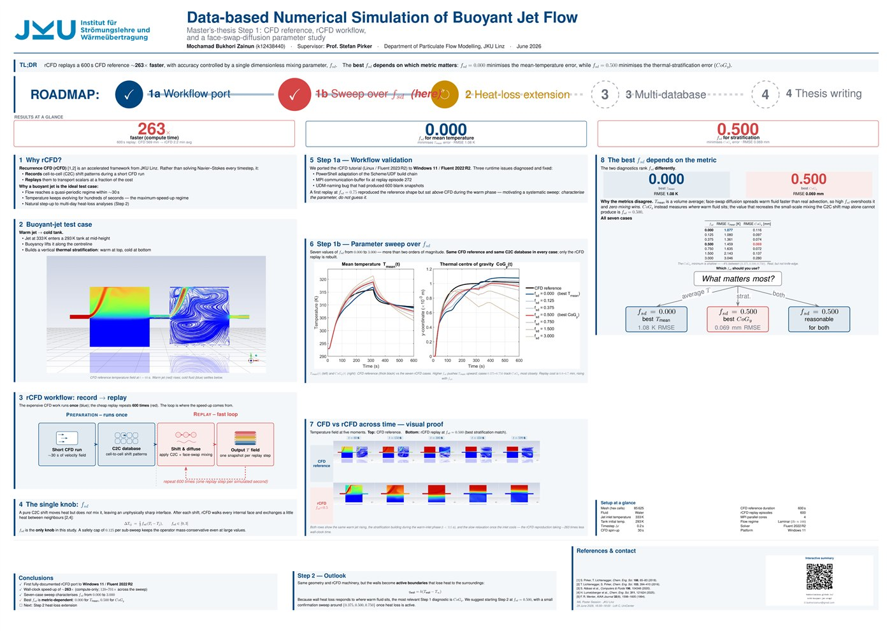

Master's Thesis · Step 1 — CFD reference, rCFD workflow & face-swap-diffusion sweep
Mochamad Bukhori Zainun (k12438440) · Supervisor: Prof. Stefan Pirker
Best on a phone in good light. AR needs camera permission and a secure (https) connection.

Point your camera toward the scientific poster.
Offline · answers from this poster's knowledge base